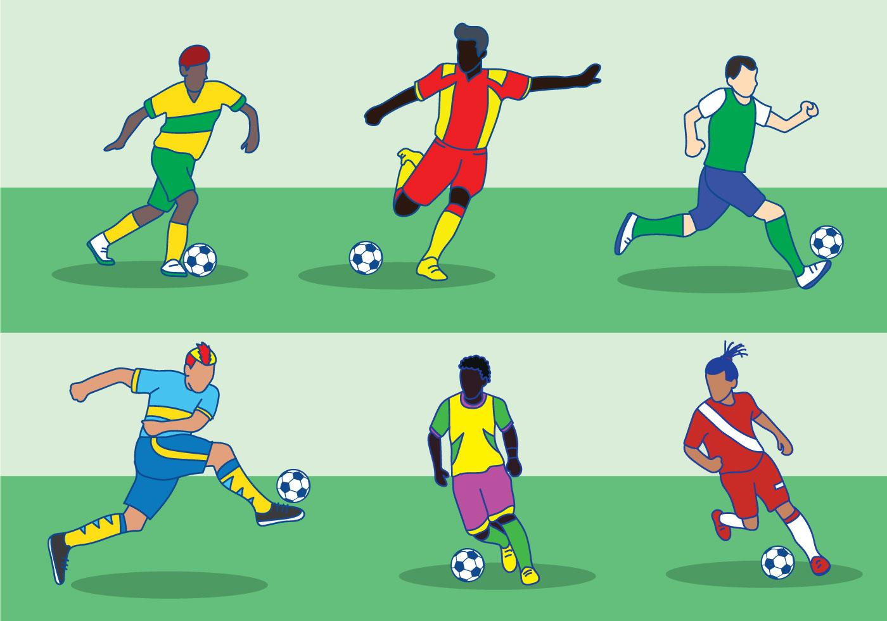

Best Young Players in the World 2025
Oct 29, 2025
A new wave of young football stars is reshaping the game in 2025. These players may be under 23, but they’re already delivering world-class performances for club and country (Harris & Holmes).
Among the rising stars, several young players have already made significant impacts in Europe’s biggest leagues. Talents such as Désiré Doué at PSG and Estevão at Chelsea are demonstrating exceptional skill, with Doué showcasing explosive pace and Estevão standing out for his fearless, direct style of play (Harris & Holmes).
Warren Zaïre-Emery, also at PSG, has already amassed over 140 appearances despite being only 19, proving himself a formidable presence in midfield and a future serial trophy winner (Harris & Holmes).
Other notable names include Jamal Musiala of Bayern Munich and Florian Wirtz of Bayer Leverkusen. Musiala continues to impress as an attacking midfielder for Germany and Bayern, while Wirtz, recently signed by Liverpool, showed his class during Leverkusen’s unbeaten Bundesliga campaign (Harris & Holmes).
Defensive talents like Pau Cubarsi at Barcelona and João Neves at PSG are also making waves. Cubarsi excels as a young centre-back with excellent game reading and distribution skills, and Neves dominates as a defensive midfielder with impressive possession and agility (Harris & Holmes).
At the very top is Barcelona’s Lamine Yamal, the standout young talent of 2025. Already commanding attention for both club and country at just 18, Yamal combines skill, maturity, and a growing trophy collection, cementing his status as the best young footballer in the world (Harris & Holmes).